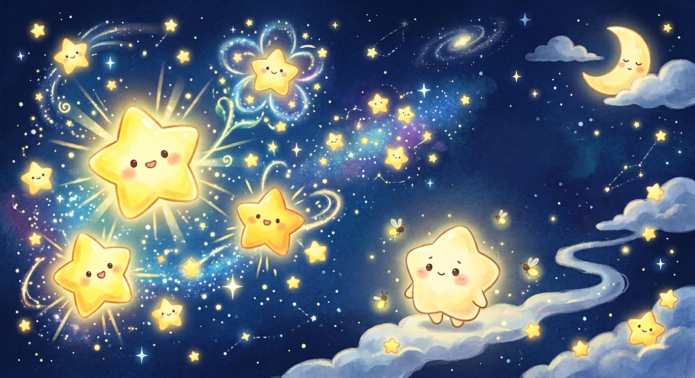
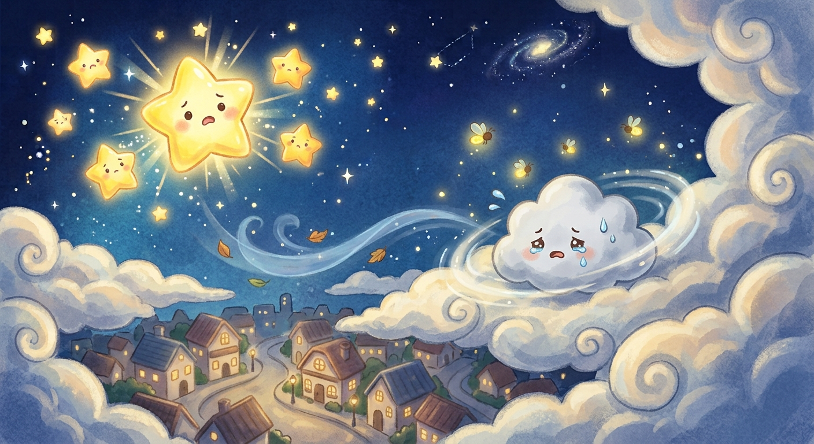
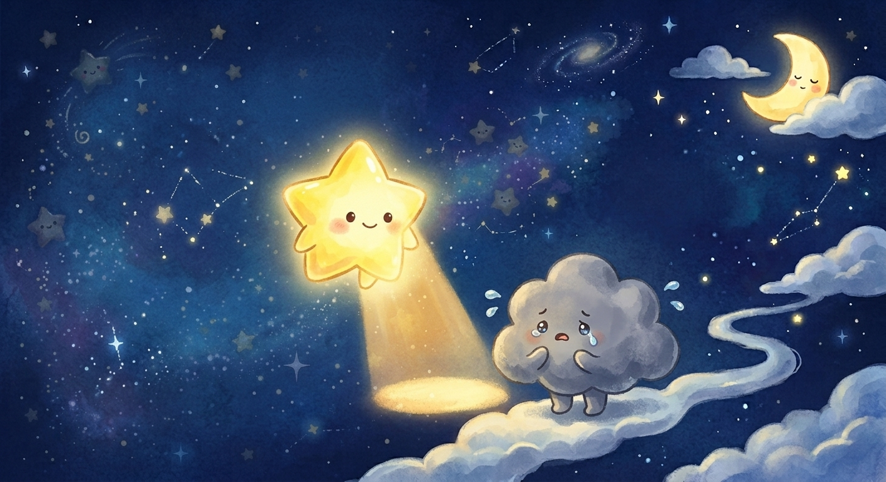
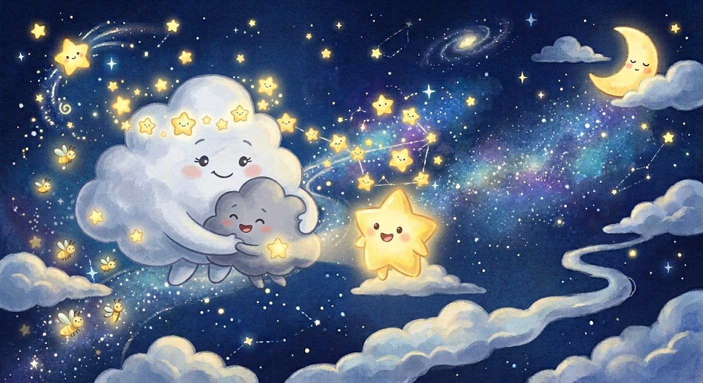

小星聽到了哭聲，輕輕地滾到小烏雲身邊，溫柔地說：「小烏雲，別害怕，我來幫你照亮路吧。」 小星知道自己的光不夠亮，沒有辦法像大星星那樣一下子照亮整個天空。於是他慢慢地飛在小烏雲的前面，把自己的微光集中起來，像一盞溫馨的小夜燈一樣，為小烏雲照亮腳下一小塊路。

在很久很久以前，天空的角落裡住著一顆叫「小星」的小星星。 小星是夜空裡最小、最不亮的一顆星。每當夜幕降臨，其他的星星夥伴都會發出耀眼奪目的光芒。只有小星，無論他怎麼用力微調自己的光，都只能發出像螢火蟲那樣微弱的柔光。 小星常常覺得有點沮喪：「如果我能再亮一點點就好了，這樣大家在地上抬頭時，就能看見我了。」

一個涼爽的秋夜，天空忽然刮起了一陣輕柔的晚風。晚風吹散了一朵躲在月亮後面的小烏雲，小烏雲迷路了，急得在空中轉圈圈，不知道該怎麼回到雲朵媽媽的身邊。 夜空很大、很黑，小烏雲有點害怕，小聲地哭泣起來。
小星聽到了哭聲，輕輕地滾到小烏雲身邊，溫柔地說：「小烏雲，別害怕，我來幫你照亮路吧。」 小星知道自己的光不夠亮，沒有辦法像大星星那樣一下子照亮整個天空。於是他慢慢地飛在小烏雲的前面，把自己的微光集中起來，像一盞溫馨的小夜燈一樣，為小烏雲照亮腳下一小塊路。

路過大熊座、穿過銀河小溪，小星一直耐心地陪著小烏雲。雖然他的光微弱，但正因為光線這樣柔和、不刺眼，小烏雲不再害怕，反而覺得好安心、好溫暖。

沒過多久，小星就把小烏雲安全地送回了雲朵媽媽身邊。 小烏雲緊緊抱住雲朵媽媽，甜甜地對小星說：「謝謝你，小星！你的光雖然不是最亮的，但卻是夜空裡最溫柔的，讓我一點都不害怕黑夜。」
聽了小烏雲的話，小星心裡感到暖洋洋的。 他終於明白，自己不需要成為最耀眼的那顆星。這份微小的光，正好能給需要陪伴的人帶來安心感。 夜漸漸深了，天空飄過了幾朵軟綿綿的雲，像被子一樣輕輕蓋在夜空上。 小星打了一個小小的哈欠，伸了個懶腰。 小星閉上了眼睛，在漫天微風的撫摸下，漸漸沉睡過去，做了一個很香很甜的夢。